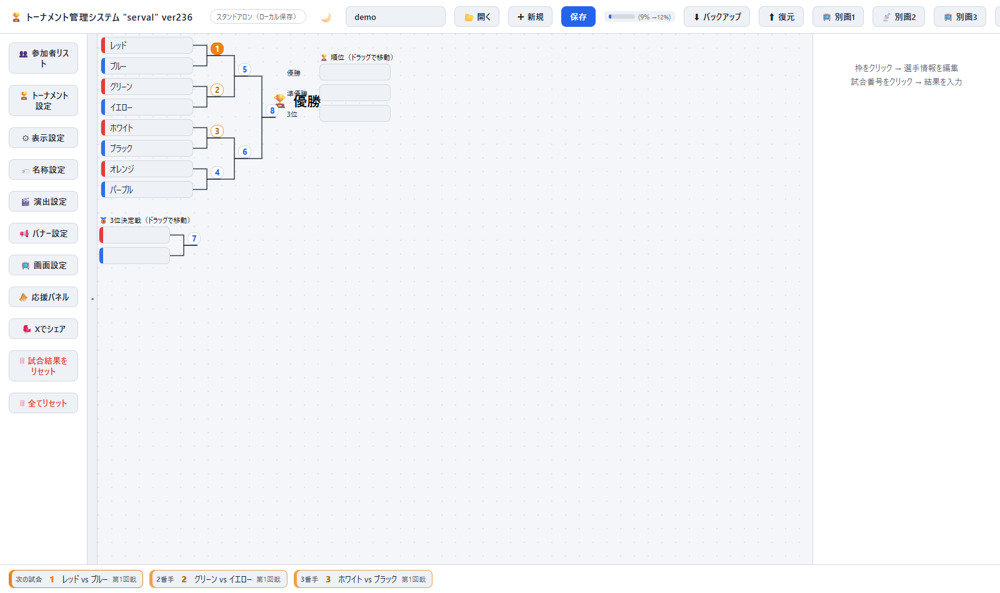

serval 取扱説明書
トーナメント・リーグ戦管理システム — Google Apps Script ウェブアプリ
🔰 はじめての方へ
大会用のページ（doc）は開発者（sin1.studio）が事前に用意しています。GASのコピーや設定は不要で、受け取ったURLを開くだけで使い始められます。
事前に受け取るもの
| もの | 用途 | 共有範囲 |
|---|---|---|
管理用URL（末尾が &admin） | 運営スタッフが登録・進行に使う | スタッフのみ |
| 閲覧用URL | 観客・参加者がスマホで見る | 誰に共有してもOK |
| 管理者パスワード | 管理用URLを開いたときに入力 | スタッフのみ（別途お知らせします） |
当日までの準備
- 管理用URLを開いてパスワードを入力
正しく入力すると、同じ端末・ブラウザでは次回から入力を省略できます。 - 大会名を入力
画面上部中央の欄に入力します。観客の画面にも表示されます。 - 組み合わせを調整
選手の枠をドラッグ＆ドロップで入れ替えられます。シードは枠をクリックして「シード設定」で変更します。
大会当日
- 結果を入力
トーナメント表の試合をクリックすると右側に入力欄が出ます。勝者と勝ち方を選んで「送信」すると、勝ち上がりと演出が自動で行われます。 - 観客に公開
閲覧用URL（QRコード化すると便利です）を共有します。会場のスクリーンには「📺 画面設定」から別画面を開いて映します（別画面表示）。
ご自身のGoogleアカウントでデータを完全に分けて運用したい場合は、新規ブックの作り方を参照してください。
servalとは
serval はロボット競技大会を対象としたトーナメント・リーグ戦管理ウェブアプリです。 Google スプレッドシートをデータベースとして利用し、Google Apps Script（GAS）のウェブアプリとしてブラウザ上で動作します。インストール不要、サーバー不要。
- トーナメント・リーグ戦の管理と、観客向けのリアルタイムウェブ配信
- 試合演出・応援機能・別画面表示による会場の盛り上げ
- LINE呼出しやSNSシェアなど周辺サービスとの連携
詳しい機能は次の「できること」にまとめています。
できること
serval で実際にできることを、運用実績のステータス別にまとめます。分かりやすさを優先し、上記の概要と重なる項目もあえて含めています。詳しい操作は各項目のリンク先を参照してください。
実運用で検証済み
ブラケット作成
- シングル・ダブルエリミネーション形式のトーナメント表を自動生成（基本サイズ4〜128、1〜4ブロックまで対応、選手数からサイズを自動算出）
- シード設定（不戦枠は繰り上げ表示）、逆シード（シードが多いブロックでは非シード同士の対戦を優先的に採番）
- 通常の3位決定戦（あり/なし切り替え、ドラッグで表示位置を移動可能）
- 通常スタイル／中央決勝（左右対向）スタイルの切り替え
- 上下の対戦相手ごとの色分け（6色編集可能パレット）、枠サイズ・テーマ（ダーク/ライト）・表示倍率の変更
- 選手・機体登録：名前リスト貼り付け、CSV取込（UTF-8/Shift_JIS）、ランダム配置、同所属の初戦回避（対戦がぶつかった場合の自動入替修復つき）、ドラッグ＆ドロップでの手動配置編集
- 参加者リストでの出欠・遅刻確認：大会当日の受付チェック、遅刻・早退・棄権・失格・出禁の状態管理
- スマホでのピンチイン・ピンチアウトによる表示倍率変更
試合運営
- 試合番号クリックで結果入力（勝者・勝ち方：1本先取／2本先取／不戦勝／勝者なし、試合時間の記録）
- 結果の取り消し（未送信の状態に戻す）。致命的な変更（試合後のドラッグ＆ドロップ・シード変更など）には確認ダイアログが出ます
- ウェブ配信（管理モードでの入力が閲覧モードに自動反映）。選手の「一言紹介」（自由記入のコメント）を対戦カード・別画面・選手詳細ポップアップに表示
- 対戦カード・勝ち上がり演出：次の試合が決まると対戦カードが大きく表示され、結果確定後は勝者側が拡大・敗者側が縮小しつつ勝者線が点滅するアニメーションが流れます。管理画面の操作は閲覧モード・別画面すべてにリアルタイム配信されます
- 画面下部の「次の試合バー」（次の試合／2番手／3番手＋スキップ、最大4件表示）。試合のスキップ、「この試合を次の試合にする」の入れ替えが可能
- 順位表の自動表示（単独/代表トーナメントは優勝・準優勝・3位、代表リーグは勝ち本数→負け本数→総試合時間の順で決定）
- 選手へのLINE呼出しボタン（line-call-system連携）。結果入力パネルの「対戦チームを呼出」で両チームを一括呼出
- バナー：ブラケット上に画像バナーを配置（ドラッグで移動・拡大縮小）。表示回数と各リンクのクリック数を集計
複数ブロック・代表戦
- 代表トーナメント（各ブロック優勝者同士で全体優勝を決定）、または代表リーグ戦（3ブロック時、2名トーナメント×3を縦並べ）
- 代表の3位決定戦（2ブロック時は各ブロック準優勝者同士、4ブロック時は代表戦準決勝の敗者同士）
別画面・配信連携
- 別画面1（
?board）：縦型の大型表示。OBSなどでの配信に対応 - 別画面2（
?lane）：横長バナー表示（画面下3分の1など） - 別画面3（
?sub）：追加の大型表示 - 別画面4（
?meter）：WinMeter（勝敗メーター）。両者のBP（バトルポイント）から算出した事前勝率と、試合中のダウン・攻勢を加味したリアルタイム勝率バーを表示 - 各別画面で表示項目（ブロック・回戦、試合番号、選手名、フリガナ、所属、タイプ＝自由記入欄が2つでアーム種類等を記録可、一言紹介、勝ち数、試合時間、修理時間、二つ名・写真＝写真は表示サイズを小/中/大から選択可、推しコメント＝別画面1〜3、複数あれば6秒ごとに切り替え）・背景・フォント・ウィンドウサイズを個別に設定可能。フリガナは選手名の直上に表示されます。別画面1は試合切り替え時の入場演出（5方式＋ランダム）も選択できます
- 管理画面からの演出（勝ち上がり・対戦カード）が別画面にリアルタイム配信されます。演出設定では表示項目・写真サイズ・演出時間・効果音を勝ち上がり／対戦カードそれぞれ個別に設定でき、二つ名を先に見せる「焦らし演出」もON/OFF可能です（既定：対戦カードON／勝ち上がりOFF）
- 対戦カード演出には「通常／🔥派手／🌈ド派手」の3段階があり、「使用する（上位）」でベスト16・ベスト8・準決勝を派手、「使用する（決勝）」で3位決定戦・決勝をド派手に自動で切り替えられます（既定はどちらもOFF）。各段階は演出設定のボタンでテストプレイできます
応援・推し投票
- 推し投票：閲覧者が選手枠をタップして投票（端末1人1票、取り消し・投票し直し可）。32文字までの一言応援コメントを添えられます
- 「❤ 応援！」ボタン・スマホのシェイクで送る応援ハート（何度でも送信可）。別画面に炎上アニメーションで表示
- 管理画面の「📣 応援パネル」で推しランキング・応援ランキング・推しコメント一覧を確認可能
Xシェア・フォント
- Xシェア：ブラケットを画像としてキャプチャし、OGP付きシェアURLを生成してX（旧Twitter）に投稿
- フォント選択機能（選手名・数字・ベースの3系統を個別に設定）。Google Fontsから11種の和文フォントを動的ロード
データ入出力
- JSON形式での保存・読込・書き出し・取込（書式バージョン付き）
- 選手名簿のCSV取込（選手名・フリガナ・所属・所属フリガナ・番号・代表者名・連絡先・一言紹介・二つ名・写真URL）
- 大会成績CSV出力（
?result&doc=<docKey>）：優勝〜ベストNの成績・勝敗数・本数を一覧化
作成済みだが実戦での検証がまだのもの 未検証
- 選手へのLINE呼出し：次の試合の選手にLINEで自動通知する機能自体は動作しますが、大会当日に選手の「番号」欄へ呼び出し用番号を登録する運用手順込みでの実戦検証はまだです。選手が待機所に来ているかどうかは判定せず、一律に通知が送られます
- ブロック代表のリーグ戦：3ブロック構成時、代表決定をトーナメント方式ではなく総当たり（3試合）のリーグ戦で行う設定が可能です。実戦での使用実績はまだありません
まだ作れていない機能（今後の構想） 未実装
- 全体を通したリーグ戦：現状のリーグ戦機能はブロック内の総当たり戦にとどまり、本大会のような「全参加者を通した総当たり」形式には対応していません
- 選手待機所のセルフチェックイン：待機所にタブレットを置き、選手自身が「来た」ボタンをセルフで押す、来ない場合は自動でLINE呼出しする、という運用は未実装です
- ストップウォッチ型の審判用デバイス：審判が手元の専用デバイス（M5Stack Stopwatchを想定したハードウェア）で試合時間・修理時間の計測、勝敗入力、次の試合の確認までできるようにする構想です。ブラウザの管理画面を開かずに試合を進行できるようにするのが狙いですが、現状はまだ設計段階です
システム構成
大会シリーズ（ブック）ごとに独立した GAS プロジェクトを1つ用意します。 各ブックの中に第1回・第2回…の各トーナメントが入る、2階層の構造です。 すべてのブックは serval ポータル から一元管理します。
| 用語 | 説明 |
|---|---|
| ブック（Book） | GASプロジェクト1つ＝大会シリーズ1つ。例：「中島杯」全体。データは1つのスプレッドシートで管理される |
| トーナメント（Tournament） | ブック内の各回。例：中島杯の第7回・第6回・…。「第N回」と「トーナメント名（docKey）」をペアで登録する |
| GASウェブアプリ（/exec） | トーナメント管理アプリ本体。URLに ?doc=JimaCup7 のように docKey を付けて各回のデータを区別する |
| Googleスプレッドシート | GASに自動紐付けされるデータ保存先。「Store」シートに全回分のデータを保存 |
| ポータル（sin1.studio/serval/） | ブック一覧・トーナメント追加の管理画面。GitHub Pagesで配信 |
?doc=JimaCup7 を付けてアクセスします。
新規ブックの作り方（新しい大会シリーズを登録する）
-
GASプロジェクトをコピー作成
script.google.com にアクセスします。 既存の serval プロジェクト（例: TournamentManager）を開き、左上メニュー「…」→「コピーを作成」を選択します。 新しいスプレッドシートとGASプロジェクトが自動で作成されます。 -
ウェブアプリとしてデプロイ
コピーしたGASを開き、右上「デプロイ」→「新しいデプロイ」を選択。 種類「ウェブアプリ」を選び、次のように設定します：- 説明：任意（例: 中島杯）
- 次のユーザーとして実行：自分（例: sin1@sin1.studio）
- アクセスできるユーザー：全員（Googleアカウント不要）
/execの URL をコピーします。 -
スクリプトプロパティを設定
GASエディタの左側「⚙ プロジェクトの設定」→「スクリプトプロパティ」を開きます。 「プロパティを追加」で以下を設定してください：プロパティ名 値 用途 ADMIN_TOKEN任意のパスワード ポータルからの書き込み認証 LINE_TOKENLINE Notifyトークン LINE通知（任意） LINE_CALL_URL呼び出しサーバーのURL LINE呼び出し（任意） -
ポータルでブックを作成・URLを登録
serval ポータル を開き、「＋ 新規ブック」をクリックします。 ブック名（例: 中島杯）を入力し、コピーした/execURLを「GAS WebアプリURL」欄に貼り付けて保存します。 準備中カードが作成され、黄色バーに変わります。 -
ブックカードにトーナメントを追加
ポータルのブックカード下部の「第 __ 回 トーナメント名」欄に入力して「＋ 追加」をクリックします。 例：第7回、トーナメント名JimaCup7→ 「第7回 / JimaCup7 / 開く / 管理」の行が表示されます。 「開く」は?doc=JimaCup7付きのURL、「管理」は?doc=JimaCup7&admin付きのURLを開きます。
トーナメントの追加（同じブックの次の回を登録する）
中島杯の第6回・第8回など、同じ大会シリーズの新しい回を追加するには、同じGASに新しいトーナメントを登録するだけです。 新たにGASをコピーする必要はありません。同じスプレッドシートに回ごとのデータが別キーで保存されます。
-
ポータルで対象のブックカード（例: 中島杯）を開く
-
カード下部の追加行に「第
8回JimaCup8」のように入力して「＋ 追加」をクリック -
「開く」ボタンから
?doc=JimaCup8付きのURLを開いて、新しいトーナメントの選手登録・設定を行う
GASのコード更新手順（servalのバージョンアップ時）
serval 本体のコード（Code.gs / app.html など）が更新された場合、各ブックのGASにも反映が必要です。
-
更新済みの serval プロジェクト（TournamentManager）から更新内容を確認
-
各ブックのGASプロジェクトを開き、該当するファイルを差し替えてコードを貼り替える
-
「デプロイ → デプロイを管理 → 編集（鉛筆）→ バージョン：新バージョン → デプロイ」で反映
-
スクリプトプロパティ（
ADMIN_TOKEN等）は引き継がれるため、通常は再設定不要
画面の見かた（どこに何があるか）
管理画面（管理者としてログインした画面）は、大きく5つの場所に分かれています。

| 場所 | 何があるか |
|---|---|
| ① 上部バー（画面のいちばん上） | 大会の切り替え・保存・バックアップ・別画面を開くボタン・閲覧モード切替 |
| ② 左のメニュー | 参加者リスト・トーナメント設定・各種設定・応援パネル・Xシェア・リセット |
| ③ 中央のトーナメント表 | 選手の枠と試合番号。枠をクリックで選手編集、試合番号（丸い数字）をクリックで結果入力 |
| ④ 右のパネル | ③で選んだ枠の選手情報、または選んだ試合の結果入力・タイマー |
| ⑤ 下の「次の試合バー」 | 次の試合・2番手・3番手。クリックでその試合を開けます |
① 上部バーのボタン（左から順に）
| ボタン | 働き |
|---|---|
| 🌙（テーマ切替） | 画面の明るい／暗いを切り替えます（自分の画面だけ） |
| 大会名の入力欄 | 今開いている大会のキー（?doc= の値、例 khk26）。ふだんは触りません |
| 📂 開く | 保存済みの大会の一覧から選んで開きます |
| ✚ 新規 | 新しい大会を作ります（今の大会は消えません） |
| 保存 | 今の状態をサーバーに保存します。自動でも保存されるので、押し忘れても大丈夫です。横の細いバーは保存容量の使用率です |
| ⬇ バックアップ | 大会データをファイル（JSON）でパソコンに保存します。大会前後に1回取っておくと安心です |
| ⬆ 復元 | バックアップしたファイルを読み込んで元に戻します（今の結果は置き換わります） |
| 📺 別画1 ／ 📡 別画2 ／ 📺 別画3 ／ 📊 別画4 | 会場モニター・配信用の別画面を新しいウィンドウで開きます。1＝大型の縦型、2＝横長バナー、3＝追加の大型、4＝WinMeter（勝敗メーター）。開いている別画面のボタンにマウスを乗せると、縮小表示が出ます |
| 👁 閲覧 | 観客と同じ「閲覧モード」で見え方を確認します |
| 📋 ログ | エラーや通信の記録。困ったときに開発者へ見せてください |
| ▸ | 上部バーを折りたたみます |
② 左のメニュー
| ボタン | 開く画面と主な中身 |
|---|---|
| 👥 参加者リスト | 当日の受付用。受付チェック、状態（遅刻・早退・棄権・失格・出禁）、番号順／名前順／所属順／試合順／受付済み優先の並べ替え。棄権・失格にすると、その選手の試合に不戦勝が自動で入ります |
| 🏆 トーナメント設定 | 大会の形を決める画面。 ・選手リスト（1行1名。「名前,所属,番号」とカンマ区切り可）と「⬆ CSV読込」 ・「ランダム配置」「順に配置」 ・同士討ち（同じ所属どうしの対戦）回避と、本人対決（同じ操縦者どうし）回避：しない／初戦だけ避ける／初戦と2回戦を避ける／できるだけ遠くで ・形式（トーナメント／リーグ戦）、先取本数（1〜5本先取）、トーナメント数（1〜4ブロック）、基本サイズ（4〜128）、シード数 ・中央決勝（左右対向）、3位決定戦の有無、Excel連携の自動適用、複数ブロックの試合順 |
| ⚙ 表示設定 | タイマー（カウントダウン／カウントアップ、試合時間、修理時間）、時間のベル（30秒・10秒・0秒）と試聴、試合選択時の自動LINE呼び出し、アナウンス文、テーマ・表示倍率・枠サイズ、枠に出す内容（所属・番号・SEED・フリガナ）、次の試合一覧や応援ボタンの表示、フォント、選手ポップアップの表示項目、対戦カードの色 |
| 🏷 名称設定 | 「機体名」「所属」「番号」などの呼び名を大会に合わせて変更（例：機体名→チーム名） |
| 🎬 演出設定 | 演出の表示と効果音を「管理画面」と「閲覧者・別画面」で別々にON/OFF。対戦カード演出（自動表示、二つ名を先に出す焦らし演出、表示項目、時間、効果音、通常／派手／ド派手／パチンコのテストプレイ、上位戦・決勝での自動使用）、勝ち上がり演出（自動再生、勝者線の点滅など）、動画用の書き出し |
| 📢 バナー設定 | トーナメント表に置くバナー画像（A〜H）とリンク先。表示回数・クリック数も確認できます |
| 📺 画面設定 | 別画面1〜3とブラケット画面の見た目。背景、色、表示する内容（ブロック・回戦、試合番号、選手名、フリガナ、所属、タイプ、一言紹介、勝ち数、試合時間、修理時間、二つ名、写真、推しコメント）、赤と青の左右入れ替え、VSの表示と大きさ、入場演出、ウィンドウサイズ、フォント |
| 📣 応援パネル | 推しランキング・応援ランキング・推しコメントの一覧 |
| 🐦 Xでシェア | トーナメント表を画像にしてXに投稿 |
| 🗑 試合結果をリセット | 組み合わせはそのままで、結果だけを全部消します（確認あり） |
| 🗑 全てリセット | 選手・結果を含めて全部消します（確認あり。先にバックアップを） |
| ◂ | 左のメニューを折りたたみます |
③ 中央のトーナメント表
- 選手の枠：クリックすると④に選手情報が出て編集できます。枠どうしをドラッグ＆ドロップすると入れ替えられます（試合が始まった後は確認が出ます）
- 試合番号（丸い数字）：クリックすると④が結果入力になります。色で状態が分かります（未試合・次の試合・終了など）
- 順位欄・3位決定戦：「（ドラッグで移動）」と書かれた見出しをドラッグすると、表示位置を動かせます
- 枠の後ろの「（棄権）」「（遅刻）」などは、参加者リストの状態です（出禁は表示されません）
④ 右のパネル
選手の枠を選んだとき：機体名・フリガナ・所属・所属フリガナ・番号・代表者名・連絡先・タイプ1/2・一言紹介文・二つ名・写真URLを編集できます。ほかに「シード設定（通常／シード）」「この枠を空にする」「呼出（番号に登録済みのLINEへ連絡）」があります。
試合番号を選んだとき（上から順に）：
- 見出し（例「Aブロック ／ 第1回戦（試合1）」）と、赤・青の選手名の横の本数チェック。勝った本数だけチェックして「送信」します（1本で送れば1本先取、2本なら2本先取）。キーボードは Shift+R／Shift+B で加算、Shift+S で送信
- 特殊ケース：不戦勝／勝者なし
- 試合時間（本数別）：1本目〜3本目の「開始」と「↺（リセット）」
- 修理時間：赤・青それぞれの修理タイマー
- ボタン：送信／この試合を次の試合にする／対戦カード演出／対戦チームを呼出（LINE）／この試合をスキップする
- その下に「対戦データベース」（過去の対戦・BP）と「WinMeter」（別画面4の勝敗メーター操作：ダウン・復帰・1本・攻勢・取り直し・リセット）
⑤ 下の「次の試合バー」
次の試合・2番手・3番手が並びます。クリックするとその試合が④に開きます。試合の順番を入れ替えたいときは、④の「この試合を次の試合にする」「この試合をスキップする」を使います。
閲覧画面（観客のスマホ）
管理者でない人が開くと閲覧画面になります。トーナメント表が自動で更新され、選手名をタップすると選手の紹介、枠をタップすると推し投票ができます（設定による）。「❤ 応援！」ボタンやスマホを振ると応援ハートが送れます。
初期設定
大会を始める前に、左のメニューで次の順に確認すると迷いません。
- 🏆 トーナメント設定：選手リスト（またはCSV読込）、先取本数、ブロック数、3位決定戦の有無を決めて「ランダム配置」
- ⚙ 表示設定：試合時間・修理時間・時間のベル、枠に出す内容
- 🏷 名称設定：「機体名」などの呼び名（必要なときだけ）
- 🎬 演出設定・📺 画面設定：会場モニターや配信で使うときだけ
選手・機体登録
まとめて登録するときは左のメニューの「🏆 トーナメント設定」の選手リスト（またはCSV読込）、1人ずつ直すときはトーナメント表の枠をクリックして右のパネルで編集します。
- 選手名：表示名（漢字・英字可）
- フリガナ：カタカナ。漢字・英字名がある場合のみ表示されます
- 所属：チーム名・学校名など（任意）
- 番号：LINE通知で使う呼び出し番号（数字のみ）
- シード：トーナメントの山の組み分けに影響します
CSV取込
「⬆ CSV読込」ボタンからExcel等で作成した選手名簿を一括登録できます。文字コードはUTF-8・Shift_JISの両方に対応（Excelで保存したCSVもそのまま読み込めます）。
サンプルファイル：sample_players.csv（対応する全項目を網羅した例です。ダウンロードして書式の参考にしてください）
選手名,フリガナ,所属,所属（フリガナ）,番号,代表者名,連絡先,一言紹介,二つ名,写真URL サンプルナイト,サンプルナイト,はるかぜ工業高校,ハルカゼコウギョウコウコウ,1,山田太郎,yamada@example.com,初出場です。よろしくお願いします,鋼鉄の意地,https://example.com/photos/sample-knight.jpg テストランナー,,個人参加,,2,鈴木一郎,,,, デモウォリアー,デモウォリアー,みなと大学ロボット研究会,ミナトダイガクロボットケンキュウカイ,3,,demo@example.com,ベスト8を目指します,, シンプル号,,,,4,,,,,
1行目は見出し行です。以下の見出し名（いずれか1つでも完全一致すればOK）に対応しています。列の順序・列数は自由で、選手名以外は全て省略可能です（上のサンプルの4行目「シンプル号」のように選手名と番号だけでも読み込めます）。
| 項目 | 使える見出し名（表記ゆれ） | 必須 |
|---|---|---|
| 選手名 | 選手名／名前／ロボット名／機体名／氏名 | 必須 |
| フリガナ | フリガナ／ふりがな／よみ／読み／ヨミ／選手名（フリガナ）／機体名（フリガナ）など（全角・半角括弧どちらも可） | 任意 |
| 所属 | 所属／チーム／チーム名／団体名 | 任意 |
| 所属フリガナ | 所属（フリガナ）／団体名（フリガナ）など（全角・半角括弧どちらも可） | 任意 |
| 番号 | 番号／No／no／ナンバー／ゼッケン | 任意 |
| 代表者名 | 代表者名／代表者／操縦者／操縦者名 | 任意 |
| 連絡先 | 連絡先／メール／mail／電話／TEL／tel | 任意 |
| 一言紹介 | コメント／備考／一言／紹介文／紹介／一言紹介／PR | 任意 |
| 二つ名 | 二つ名／二つ名・愛称／愛称／ニックネーム | 任意 |
| 写真URL | 写真URL／写真／画像URL／ロボット写真／機体写真URL | 任意 |
見出し行を省略し「選手名,所属」の2列だけを並べる簡易形式にも対応しています。また所属列自体を省略し、選手名の列に 選手名（所属名） の形式でまとめて書いた場合も自動的に選手名と所属に分割されます。
参加者リスト（受付チェック）
管理画面左の「👥 参加者リスト」ボタンから、大会当日の出欠・遅刻確認ができます。
- 受付：選手ごとにチェックボックスで受付済みかどうかを記録します。上部に「受付済み ○ / ○ 名」と表示されます
- 状態：遅刻・早退・棄権・失格・出禁を選手ごとにプルダウンで設定できます（設定した選手は一覧で薄く表示されます）。出禁は管理者だけが見られる場所に保存され、閲覧者には届きません
- 番号順・名前順・所属順・試合順（最初の対戦番号順）・受付済み優先の5種類でソートできます
トーナメント進行
対戦組み合わせ生成
「トーナメント」タブを開き「組み合わせを生成」ボタンをクリックします。登録済みの選手から自動的にブラケットが生成されます。
試合の進行
- トーナメント表の試合（試合番号）をクリックすると、右側に結果入力欄が出ます
- 「1本目」の「開始」で試合時間を計り、終わったら「停止」。「↺」でその本の時間を初期値に戻せます
- 本を取った選手のチェックボックスに印を付けます。2本先取の試合で1本目のあとにチェックすると、別画面の時間は2本目の初期値に切り替わります
- 「送信」で確定すると、勝者が次の試合へ進み、演出が流れます（キーボードは Shift+R / Shift+B で加算、Shift+S で送信）
時間のベル
カウントダウンのとき、残り30秒で「チーン」、10秒で「チンチーン」、0秒で「チンチンチーン」と鳴り、0秒でタイマーが止まります。「⚙ 表示設定」のタイマー設定でそれぞれON/OFFでき、「🔔 ベルを試聴」で音を確認できます。
棄権・失格の試合
参加者リストで棄権・失格（出禁を含む）にした選手がいる試合を開くと、相手の「不戦勝」（両者なら「勝者なし」）が入力済みになります。内容を確認して「送信」してください。トーナメント表の選手枠には（遅刻）（棄権）などが表示されます（出禁は表示されません）。
複数ブロック・代表戦 NEW
設定でトーナメント数を2以上にすると、A・B…の各ブロックとは別に「代表トーナメント」（または代表リーグ戦）が右側に表示され、各ブロックの優勝者（代表）同士で全体の優勝を争います。
| ブロック数 | 代表の決め方 |
|---|---|
| 2ブロック | 代表2名によるトーナメント（決勝1試合のみ） |
| 3ブロック | 「代表の決め方」設定でトーナメント方式（1ブロックが不戦勝で決勝進出）またはリーグ戦方式（総当たり3試合）を選択 |
| 4ブロック以上 | 代表4名によるトーナメント（準決勝2試合＋決勝） |
代表の3位決定戦
設定の「代表にも3位決定戦を設ける」にチェックを入れると、全体3位を決める試合が追加されます。ブロック数によって対戦カードの意味が異なります。
- 2ブロック時：代表決定戦（決勝）とは別に、AブロックとBブロックそれぞれの自分自身の決勝で敗れた選手（ブロック準優勝）同士が3位を争います
- 3ブロック以上（代表4枠）時：代表トーナメント自身の準決勝で敗れた2名が3位を争います
リーグ戦進行
「リーグ」タブで総当たり戦を管理します。各対戦の勝敗ポイントを入力すると自動的に順位表が更新されます。
別画面表示（観客用）
管理画面上部の「📺 別画1」〜「📊 別画4」で、観客・配信向けの表示専用画面を別ウィンドウで開けます。開いている別画面のボタンにマウスを乗せると、1/4に縮小した画面が表示されます。
配信専用モード（別のPCで映す）
次のURLを開くだけで、管理画面なしでも別画面が表示され、サーバーから最新の状態を数秒ごとに取り込みます（結果の反映はおおむね4〜9秒）。
…/exec?board&doc=大会名 別画面1 …/exec?lane&doc=大会名 別画面2（横長） …/exec?sub&doc=大会名 別画面3
同じPCで管理画面が配信している間はそちらを優先します（即時反映）。別画面4（WinMeter）は管理PCで開いてください。試合時間のタイマーや試合途中の本数も表示されます。
画面ごとの設定（「📺 画面設定」）
- 推しコメント：対戦中の2機に寄せられたコメントを表示（複数は6秒ごとに切り替え）。OFFにすると数秒で消えます
- 赤と青を左右入れ替え：機体と色の組み合わせはそのまま、表示の左右だけを入れ替えます
- VS（勝ち数OFF時）とその大きさ（大・中・小）
- 長い機体名は文字の高さを保ったまま横幅を圧縮して表示します（最大50%。それでも入らない場合のみ省略）
演出（勝ち上がり・対戦カード）はタップするといつでも省略できます。「🎬 演出設定」の表で、管理画面と閲覧者・別画面それぞれの表示・効果音をON/OFFできます（例：管理画面では演出を出さず、別画面にだけ出す）。
| 表示オプション | 内容 |
|---|---|
| 次の試合 | 次に行われる試合の選手名・機体名 |
| 現在の試合 | 進行中の試合のタイマー・スコア |
| 修理時間 | 修理中の機体名と経過時間 |
| 順位表 | リーグ戦の現在の順位 |
応援・推し投票 NEW
閲覧者が別画面（?board等）や閲覧モードで選手枠をタップすると、選手の詳細ポップアップに「☆ 推す」ボタンと一言応援欄が表示されます。
- 推し投票：「☆ 推す」で1票投票（端末（ブラウザ）ごとに1人1票）。ボタンは「⭐ 推し中」に変わり、もう一度押すと投票を取り消して他の選手に投票し直せます
- 一言応援：投票中の選手にのみ、32文字までの応援コメントを入力できます。入力後しばらくすると自動送信され、投票を取り消すと同時にコメントも消えます
- ❤ 応援！（応援ハート）：投票とは別に、ボタンまたはスマホのシェイク操作で送信できる一過性のリアクションです（何度でも送信可）。board/sub画面に炎上アニメーションで表示されます
管理画面の「📣 応援パネル」では、推しランキング・応援ランキングに加え、「💬 推しコメント」タブで選手ごとのコメント一覧（新しい順・投稿日時付き）を確認できます。一覧は管理者のみ閲覧でき、投稿者を特定する情報は表示されません。
別画面1〜3の画面設定で「推しコメント」をONにすると、対戦中の2機に寄せられたコメントを別画面にも表示します（複数あれば6秒ごとに切り替え）。コメントは管理画面が約30秒ごとに取得するため、表示までに最大30秒ほどかかり、管理画面を開いている間だけ更新されます。
修理タイマー
試合終了後に修理時間を計測できます。試合の右カラムの「修理開始」ボタンで計測開始。設定で指定した上限時間に達すると別画面の表示から自動的に消えます。
LINE通知
次の試合に呼ばれる選手にLINEで自動通知します。
設定手順
-
LINE Notify でトークンを取得（「トークへの通知」で自分のトークに送るのが簡単）
-
呼び出しサーバーを起動。line-call-system を PC でローカル起動し、cloudflared などで外部公開URLを取得。
-
GASのスクリプトプロパティに設定：
LINE_TOKEN：LINE NotifyのトークンLINE_CALL_URL：呼び出しサーバーの外部URL（例：https://xxxx.trycloudflare.com）
-
選手の「番号」欄に呼び出し用の番号（数字のみ）を登録
アナウンス
「設定 → アナウンス」に短いテキストを入力すると、別画面の「応援」ボタンと試合キューの間に表示されます。 休憩時間のお知らせや「14時まで 自由練習」などを一時的に表示するのに使います。空にすると非表示になります。
バナー広告
「設定 → バナー」から画像URLと表示時間を設定できます。別画面で試合と試合の間にバナーが自動的に表示されます。
X（Twitter）シェア
試合確定後に「Xシェア」ボタンが表示されます。試合結果の画像を生成してXに投稿できます。 Renderにデプロイされたシェアサーバーが画像生成を担当します。
ポータル管理
serval ポータル からブックの一覧表示・編集・削除と、各ブック内トーナメントの追加・削除ができます。
- ブックカード：「編集」でブック名・GAS URL・メモを更新、「削除」でポータルから非表示（ソフトデリート）
- トーナメント行：「開く」→選手閲覧モード、「管理」→管理者モード（パスワード認証あり）、「×」で行を削除
- 「削除済みも表示」チェックで削除済みブックを表示し「復元」できます。GASのデータ自体は削除されません。
ポータルの書き込み操作（作成・更新・削除・トーナメント追加）には管理者パスワードが必要です。 初回アクセス時にプロンプトが表示され、ブラウザのlocalStorageに保存されます。
大会成績CSV出力 NEW
GASウェブアプリのURLに ?result&doc=<docKey> を付けてアクセスすると、参加選手・機体の大会成績一覧をCSVファイルとしてダウンロードできます。
https://script.google.com/macros/s/…/exec?result&doc=JimaCup7
doc= の指定を忘れると default という別データが返ってしまいます。必ず対象のトーナメント名（docKey）を指定してください。
CSVには以下の列が出力されます（1試合ごとの細かい情報は含みません）。
| 列 | 内容 |
|---|---|
| 番号／ロボット名／フリガナ／操縦者名／所属／所属フリガナ／タイプ1／タイプ2／一言紹介 | 選手・機体登録の内容そのまま |
| 大会成績 | 大会での最終成績（下表参照） |
| 勝ち試合数／負け試合数／勝ち本数／負け本数 | 大会を通じた通算成績 |
「大会成績」列の付き方はブロック数によって変わります。
| 構成 | 成績表記 |
|---|---|
| 単独トーナメント（ブロック1つ） | 優勝・準優勝・3位・4位、それ以外は「ベストN」（Nはその回戦の実際の対戦人数） |
| 複数ブロック（代表トーナメントあり） | ブロックをまたいだ全体成績として 優勝・準優勝・3位・ベスト4・ベスト8・ベスト16 の6段階のみ付与。優勝〜3位・ベスト4は代表戦の結果、ベスト8は各ブロック決勝の敗者、ベスト16は各ブロック準決勝の敗者。それより浅い試合の敗者は空欄になります |
データ管理
全データはGASに紐付いたGoogleスプレッドシートの「Store」シートに保存されています。 ver211以降のデータは圧縮して保存されるため、シートを直接開いても中身は読めません。内容の確認やバックアップは管理画面の「⬇ バックアップ」（JSON保存）を使ってください。
トラブルシュート
| 症状 | 対処 |
|---|---|
| 画面が白いまま / 古いバージョンが表示される | Ctrl+Shift+R でキャッシュをクリアして再読み込み |
| 「init is not defined」エラー | GASのスクリプトにSyntaxErrorがある可能性。管理者に報告 |
| LINE通知が来ない |
|
| 別画面が更新されない | 別画面は定期的にポーリングしています。ネットワーク状況を確認し、ページを再読み込みしてください |
| ポータルにアクセスできない（CORS エラー） | レジストリGASのデプロイが最新か確認。GASを再デプロイ（バージョン更新）してください |
更新履歴
主な更新のみを記載しています（軽微な修正は省略）。バージョン番号は管理画面左上の見出しに表示されます。
| Ver | 内容 |
|---|---|
| 234 | 試合や選手枠を選んだままでも、他の管理画面で入力・取り消しした結果を自動で取り込むよう改善（同じPCで開いた別画面に古い結果が残り続ける問題の対策。文字入力の途中は取り込みを待ちます） |
| 233 | 参加者リストの「出禁」を、管理者だけが読める別の保存先に分けて保存（閲覧者の画面には一切届きません）。以前のデータの出禁は、管理画面で開いたときに自動で移し替えます |
| 232 | 配信するプログラムを圧縮して軽量化（動作・画面は変わりません） |
| 231 | サーバーの安定性を改善：読み込みを高速な一時保存から返し、保存が混み合ったときは一時退避して後から反映（「ロック取得タイムアウト」で保存・送信が止まる問題の対策）。閲覧画面は更新があったときだけ読み込むよう変更 |
| 230 | 演出の表示・効果音を管理画面と閲覧者・別画面で個別に設定できるよう整理。棄権・失格の選手がいる試合に不戦勝を自動入力（送信は手動）。開いている別画面ボタンにマウスを乗せると縮小表示。カウントダウンの時間のベル（30秒・10秒・0秒、各ON/OFF） |
| 229 | 試合時間タイマーのリセットボタン、残り0秒での自動停止と通知。2本先取で1本目のあとに別画面の時間を2本目の初期値へ切り替え。結果の取り消し時に古い残り時間が残る不具合を修正 |
| 228 | 演出をタップで省略。別画面のVSの表示ON/OFFと大きさ設定。演出・別画面の文字が途中で別のフォントに切り替わらないよう、フォントを先読み |
| 227 | 試合途中の本数（2本先取の1-0など）を別画面に表示 |
| 226 | 別画面に「赤と青を左右入れ替え」設定 |
| 225 | 参加者リストの状態をトーナメント表に表示（遅刻・早退・棄権・失格。出禁は非表示） |
| 224 | 配信専用モードの別画面でも推しコメントを表示 |
| 223 | 全ての別画面で機体名を2pt小さく、二つ名・所属を1ptずつ大きく |
| 222 | 長い機体名を文字の高さを保ったまま横幅圧縮して表示 |
| 221 | 配信専用モード：別画面のURLを開くだけで、管理画面なしでもサーバーから最新を取り込んで表示 |
| 220 | 結果入力で、先取本数に達していなくてもチェックした本数のまま送信できるように（1個なら1本先取、2個なら2本先取の扱い。同点のときだけ案内を表示） |
| 218 | 対戦カード演出に「🎰 パチンコ」を追加（群予告→保留変化→リーチ→PUSH→大当り→キリン柄カード） |
| 217 | セキュリティ強化：管理者パスワードをサーバー側で照合するように変更し、画面のソースからパスワードを削除。パスワード未設定時に誰でも書き込めた問題を修正 |
| 216 | 対戦カード演出の「派手／ド派手」をベスト16以上（派手）と3位決定戦・決勝（ド派手）に自動適用できるように（「使用する（上位）／（決勝）」チェック）。派手は段階名（ベスト16／ベスト8／準決勝）をテロップ表示、煽り文言は複数パターンからランダム。二つ名を斜めの称号帯に1文字ずつ刻む表示に |
| 215 | 対戦カード演出のテストプレイに「通常／派手／ド派手」を追加（フラッシュ・激突・紙吹雪・昇格演出など。フラッシュは1秒3回以下に制限） |
| 214 | データの読込に失敗したとき、空の状態で上書き保存しないよう保存を一時停止（正常に読めたら自動で再開）。保存時の通信エラーも画面に通知 |
| 213 | 別画面1〜3に推しコメントの表示（チェックでON、複数は6秒ごとに切り替え）。別画面1・3のフリガナを選手名の直上へ移動 |
| 212 | 「推し投票ランキング」を「応援パネル」に改名し、推しコメント一覧タブを追加 |
| 211 | 保存データを圧縮して複数セルに分けて保存するように変更し、1大会あたりの容量上限を約20倍に拡大（khk26規模で使用率約1%）。保存に失敗したとき画面に通知するように修正。シードがある状態で選手数・トーナメント数などの全体設定を変えると、シードが自動配置で振り直されることを確認するダイアログを追加 |
| 210 | 別画面1の試合切り替え演出を5方式（スライド／フリップ／ズーム／フェード／ライズ）＋ランダムから選択可能に。画面設定からテストプレイ可能 |
| 209 | 焦らし演出のカード枠サイズを完全固定（所属の有無等で色ラインと二つ名が重なる不具合を解消）。二つ名が移動しながら変化するアニメーションを復元 |
| 208 | 焦らし演出の二つ名表示を縮小し「」を削除。対戦カード／勝ち上がりそれぞれに焦らし演出のON/OFFを独立設定（既定：対戦カードON・勝ち上がりOFF） |
| 207 | 別画面1〜4（WinMeter含む）に写真サイズ（小／中／大）の設定を追加 |
| 206 | 演出設定に写真サイズ選択・対戦カード／勝ち上がりの表示順入れ替え・選手ポップアップの表示項目設定（番号／所属／フリガナ／タイプ／一言紹介／二つ名／写真）を追加。テストプレイは単体再生に変更 |
| 203〜205 | 複数ブロック代表トーナメントの決勝で二つ名・写真（フリガナ／タイプ／一言紹介も）が反映されない不具合を修正。WinMeterの事前勝率をBP（バトルポイント）基準に変更 |
| 199〜202 | 別画面1〜4の二つ名・写真表示ON/OFF、演出設定を共通／勝ち上がり／対戦カードに分割し表示項目を個別設定可能に、二つ名を先に見せる「焦らし演出」とテストプレイ機能を追加 |
| 191 | 表示倍率UIと実データの乖離バグを修正（選択肢にない0.5倍指定時、UI表示上は100%でも実際は縮小されたままだった問題）。doPostにpageList APIを追加 |
| 189 | 配信データ生成時、文字列中の https:// が正規表現によるコメント除去処理で誤って消失する不具合を修正（// エスケープで対策） |
| 187 | ?result の2ブロック代表3位決定戦、成績表記をさらに1段深い方向に修正 |
| 186 | ?result の2ブロック代表3位決定戦、敗者の成績表記を「ベスト4」に修正 |
| 184 | KHK杯型3位決定戦（2ブロック代表・repSize=2）を実装。大会成績CSV出力の3位対応、取説更新 |
| 123 | ブロックリーグ戦（総当たり）に対応 |
| 122 | WinMeter（勝敗メーター）を実装 |
| 121 | ポータルをservalトップページへ移動、GASのHTMLをapp.htmlとして分離、取説（本ページ）を新規作成。ダークモードをデフォルト化しテーマ切り替えボタンを追加 |
| 20 | GAS配信の白画面バグを解決（<script>の分割・iframe内URL不可視への__EXECURL__注入で対策） |